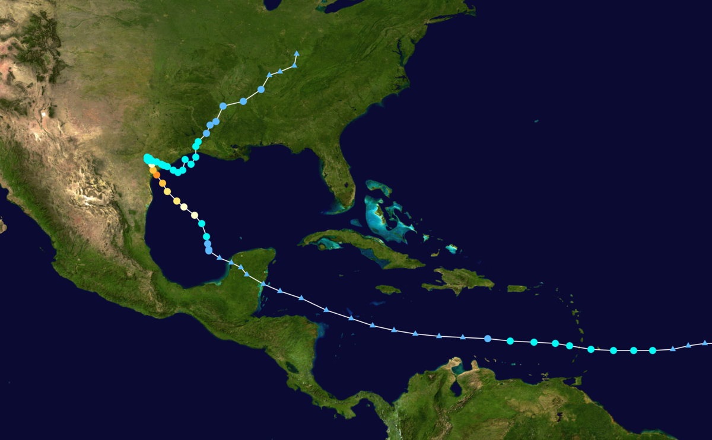
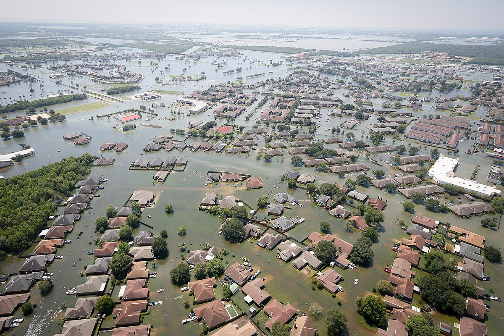
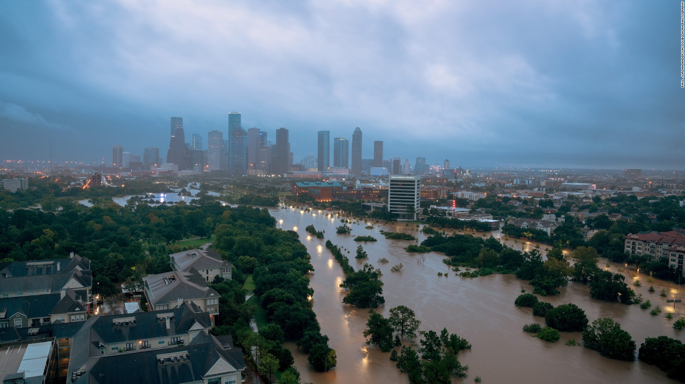
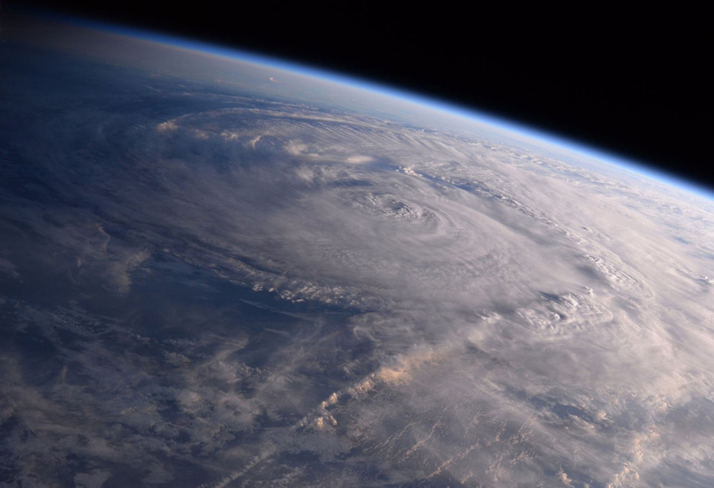

Hurricane Harvey
Hurricane Harvey was the first major hurricane to make landfall in the United States since Wilma in 2005, ending a record 12-year period with no hurricanes of Category 3 intensity or higher making landfall in the United States. In a four-day period, many areas received more than 40 inches (1,000 mm) of rain as the system meandered over eastern Texas and adjacent waters, causing catastrophic flooding. With peak accumulations of 51.88 in (1,318 mm), Harvey is the wettest tropical cyclone on record in the contiguous United States. The resulting floods inundated hundreds of thousands of homes, displaced more than 30,000 people, and prompted more than 13,000 rescues.
Harvey has caused at least 47 confirmed deaths; 1 in Guyana,and 46 in the United States. Catastrophic inland flooding is ongoing in the Greater Houston metropolitan area. FEMA director Brock Long called Harvey the worst disaster in Texas history, and expected the recovery to take many years.Preliminary estimates of economic losses range from $10 billion to $160 billion,with a large portion of losses sustained by uninsured homeowners.
Meteorological History ▾
Early on August 13, the National Hurricane Center (NHC) began monitoring a tropical wave on the western coast of Africa. Amid favorable environmental conditions, the wave was expected to merge with a broad area of low pressure southwest of Cape Verde and gradually organize thereafter. Instead, the two disturbances remained separate, with the broad trough continuing westward and the tropical wave moving farther north. On August 17, shower and thunderstorm activity in association with the trough began to show signs of organization, while high-resolution satellite showed an increasingly defined low-level circulation. As such, the NHC initiated advisories on a potential tropical cyclone, allowing tropical storm watches and warnings to be hoisted for portions of the Lesser Antilles. An Air Force Reserve Hurricane Hunter aircraft deployed to the disturbance later that afternoon found a well-defined center and tropical storm-force winds, prompting the NHC to upgrade it to Tropical Storm Harvey at 21:00 UTC.
Close Tab
Effects in the United States ▾
Throughout Texas, more than 300,000 people were left without electricity and billions of dollars of property damage was sustained. At least 64 people were killed, though that number was expected to rise. By August 29, approximately 13,000 people had been rescued across the state while an estimated 30,000 were displaced. The refinery industry capacity was reduced, and oil and gas production was affected in the Gulf of Mexico and inland Texas. On Monday, various news outlets announced the closure of oil refineries ahead of Hurricane Harvey, creating an artificial fuel shortage. Panicked, motorists waited in long lines. Consequently, gas stations through the state were forced to close due to the rush.
More than 48,700 homes were affected by Harvey throughout the state, including over 1,000 that were completely destroyed and more than 17,000 that sustained major damage; approximately 32,000 sustained minor damage. Nearly 700 businesses were damaged as well. Texas Department of Public Safety stated more than 185,000 homes were damaged and 9,000 destroyed.
Close Tab
Aftermath ▾
Houston Mayor Sylvester Turner imposed a mandatory curfew on August 29 from 12 a.m. to 5 a.m. local time until further notice. He cited looting as the primary reason for the curfew. On August 29, President Trump, First Lady Melania Trump, and U.S. Senators John Cornyn and Ted Cruz toured damage in the Corpus Christi metropolitan area. President Trump made a formal request for $5.95 billion in federal funding on August 31 for affected areas, the vast majority of which would go to FEMA.
Texas Governor Greg Abbott deployed the state's entire National Guard for search and rescue, recovery, and clean up operations due to the devastating damage caused by the storm and resulting floods. Other states' National Guard's have offered assistance, with several having already been sent. Meanwhile, the United States Immigration and Customs Enforcement assigned approximately 150 employees from around the country to assist with disaster relief efforts, while stating that no immigration enforcement operations would be conducted.
Approximately 32,000 people were displaced in shelters across the state by August 31. The George R. Brown Convention Center, the state's largest shelter, reached capacity with 8,000 evacuees. The NRG Center opened as a large public shelter accordingly. More than 210,000 people registered with FEMA for disaster assistance.
Close Tab
Environmental Factors ▾
The Geography of Houston places it in a low-lying part of the Gulf Coastal Plain, and its clay-based soils provide poor drainage. The climate of Houston brings very heavy rainfall, which together with tidal flood events means that there have been repeated floods in the city ever since its founding in 1836, though the flood control district founded in 1947, aided by the U.S. Army Corps of Engineers, managed to prevent statewide flooding for over fifty years. More recently, residents died in "historic flooding" in May 2015, and in the April 2016 "tax day floods". There is a tendency for storms to move very slowly over the region, and drop huge amounts of rain over an extended period, as occurred during Tropical Storm Claudette in 1979, and Tropical Storm Allison in 2001.
The area is a very flat flood plain at shallow gradient, slowly draining rainwater through an intricate network of channels and bayous to the sea. The main waterways, the San Jacinto River and the Buffalo Bayou, meander slowly, laden with mud, and have little capacity for carrying water.
Close Tab